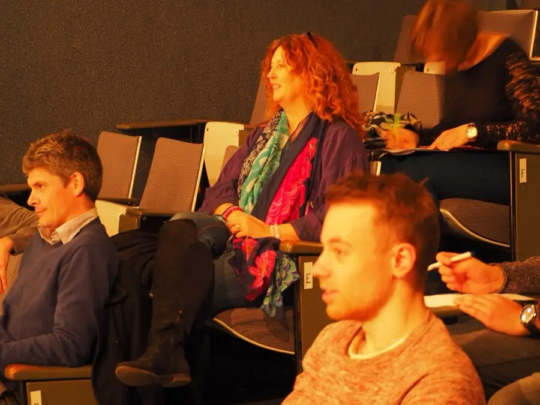

Waarom je eerste speech de moeilijkste en de belangrijkste is
Bijna niemand vindt zijn eerste speech goed. Toch is het net die eerste keer die alles in gang zet — hier is waarom we er zoveel aandacht aan besteden.
Lees verder →Toastmasters Hasselt
Verslagen van clubavonden, en wat we onderweg leren over spreken voor publiek.
Bijna niemand vindt zijn eerste speech goed. Toch is het net die eerste keer die alles in gang zet — hier is waarom we er zoveel aandacht aan besteden.
Lees verder →Een table topic over durven vragen, en wat er gebeurde toen een gast na drie bezoeken eindelijk zelf het woord nam.
Lees verder →De timekeeper leest een lijst met getallen af en bedient drie lampjes. Klinkt saai. Is het beste startpunt dat we kennen voor wie nog niet durft.
Lees verder →Kom langs
Gratis en vrijblijvend. Je hoeft niets te zeggen.
Blog

Iedereen die hier lid wordt, moet er ooit aan beginnen: de Ice Breaker, je allereerste voorbereide speech. Vier minuten over jezelf, voor een zaal die je nog nauwelijks kent. Bijna niemand vindt die speech achteraf goed.
En toch is het net die eerste keer die alles in gang zet. Want vanaf dat moment weet je hoe het voelt om daar te staan — en merk je dat er niets ergs gebeurt.
Je hoeft niet meteen met een Ice Breaker te starten. Veel nieuwe leden nemen eerst een paar keer een kleine rol: timekeeper, of grammaticacommissaris. Je zegt een paar zinnen, je zit weer. De drempel schuift zo vanzelf op.
De enige manier om over podiumangst te raken is heel vaak op dat podium gaan staan.
Dat is geen trucje en het gaat niet snel. Maar het werkt, en je staat er niet alleen voor.
Kom het zelf bekijken
Sportcentrum Olympia, Hasselt. Gratis en vrijblijvend — je hoeft niets te zeggen.